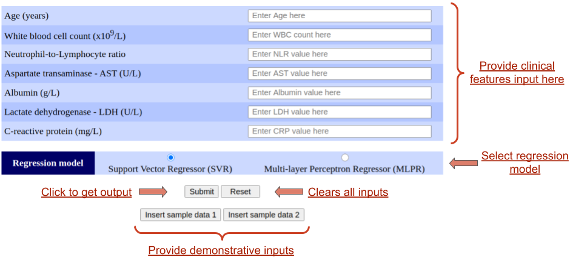
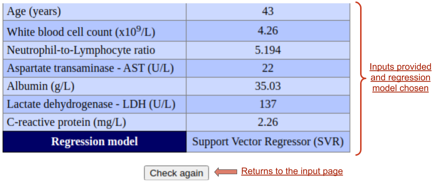
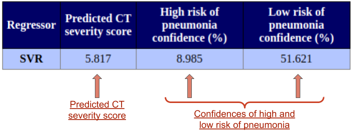
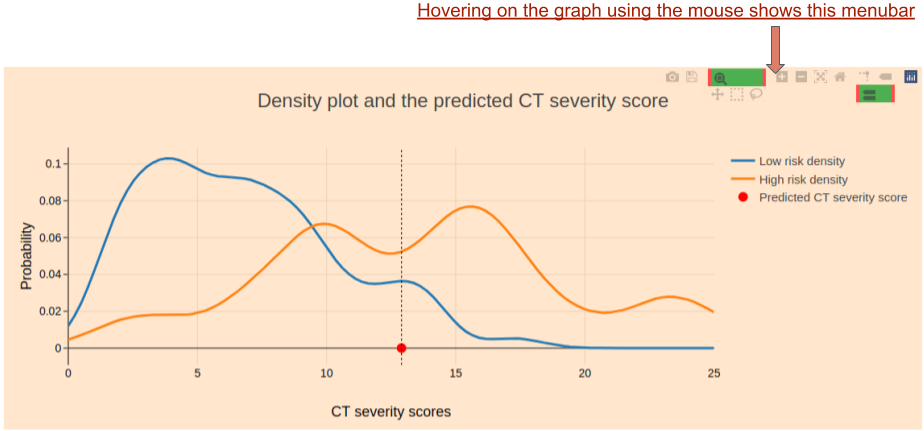

-
Users need to fill up all the fields in the input form. It consists of
seven clinical features - Age, Neutrophil-lymphocyte ratio (NLR),
Aspartate aminotransferase (AST), Albumin, Lactic dehydrogenase (LDH),
and C-reactive protein (CRP). In case any feature is not available,
users can use the table of normal ranges given below the form to input
an appropriate normal value according to age.
-
Users also need to choose a regressor to be used for the prediction.
There are two options - Support Vector Regressor (SVR) and Multi-layer
Perceptron Regressor (MLPR).
-
After providing inputs, users need to click on the "Submit" button to get
output.
-
Users can click on the the reset button to clear all inputs in the form.
-
Users can use the "Insert sample data 1" and "Insert sample data 2" buttons
to insert two different sets of demonstrative data for testing purposes.

Understanding the output
-
In the output page, the inputs provided are displayed first alongwith the
chosen regressor. A "Check again" button is present to take users back to
the input page.

-
Next, the predicted CT severity score and the confidences of high and low
risk of pneumonia are displayed. For more details on the prediction
methodology, please refer to the About page.

-
A plot of density curves and the predicted CT severity score is displayed.
This plot is interactive. Hovering on the graph shows a menu in the right
upper corner. Users can perform many operations like zoom, pan and download
the graph through the menu bar.
